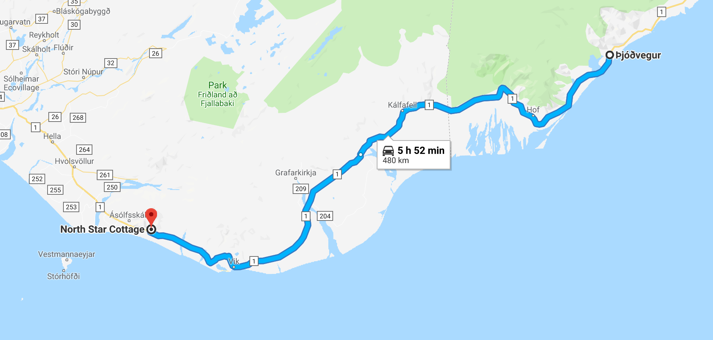

« Previous Day 3 Next »

As a note, you can plug in the GPS coordinates on your maps to find these places, or click on the link.
The 3rd day was interesting. On Google Maps, I saw an ice cave so I wanted to go find it and explore it! We couldn't find it though :/, but we did end up seeing a huge glacier.
The 1st photo and 2nd photo is the giant glacier! We parked HERE. GPS Coordinates (64.110327,-16.093032). We then walked around 3-4 miles without a trail to HERE. GPS Coordinates (64.127700, -16.200346). We used a GPS to find the glacier, so don't get lost!
The 3rd photo is HERE. GPS Coordinates (64.044346, -16.177376). The 3rd photo is quite famous, and it has really cool ice on a beach!
The 4th, 5th and 6th photos were random road stops. The views on the road are very pretty, so definitely stop a lot.
The 7th photo is HERE. GPS Coordinates (63.529538,-19.512932). This is probably the most recognized waterfall in Iceland. Super cool!
We got back to the cottage to rest. After a thick nap, we decided to go see the northern lights. We just drove down the road and did see it! You can see it in the 8th photo. It was pretty far, so we decided to try another night.
We stayed at the North Star Cottage again, where you can see the links on Day 2.
« Previous Day 3 Next »